In this project, I implemented and trained diffusion models from scratch, progressing from simple unconditional generation to sophisticated class-conditional models with classifier-free guidance. I began by training a simple denoising UNet on the MNIST dataset, learning the fundamentals of noise prediction and iterative denoising. I then extended this to a full time-conditioned diffusion model capable of generating diverse handwritten digits. Finally, I implemented class conditioning to enable controlled generation of specific digits, incorporating techniques like classifier-free guidance to improve sample quality.
I began by implementing an unconditional UNet architecture to perform denoising on MNIST images.
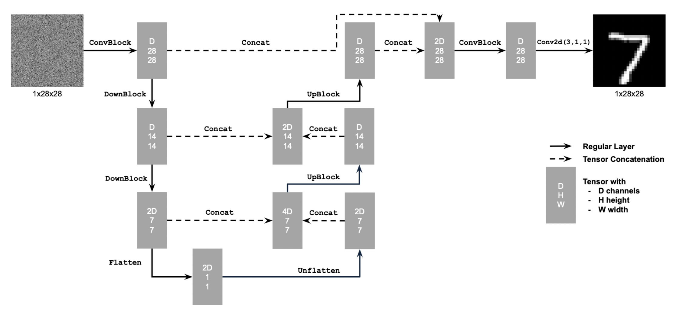
Before training, I visualized the noising processes over different sigma values.
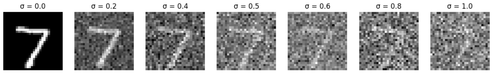
Next, I trained the model to perform denoising using a sigma value of 0.5. I used Mean Squared Error (MSE) as the loss function and optimized the model using the Adam optimizer. The training process continued until convergence, with periodic evaluations on a validation set to monitor performance.
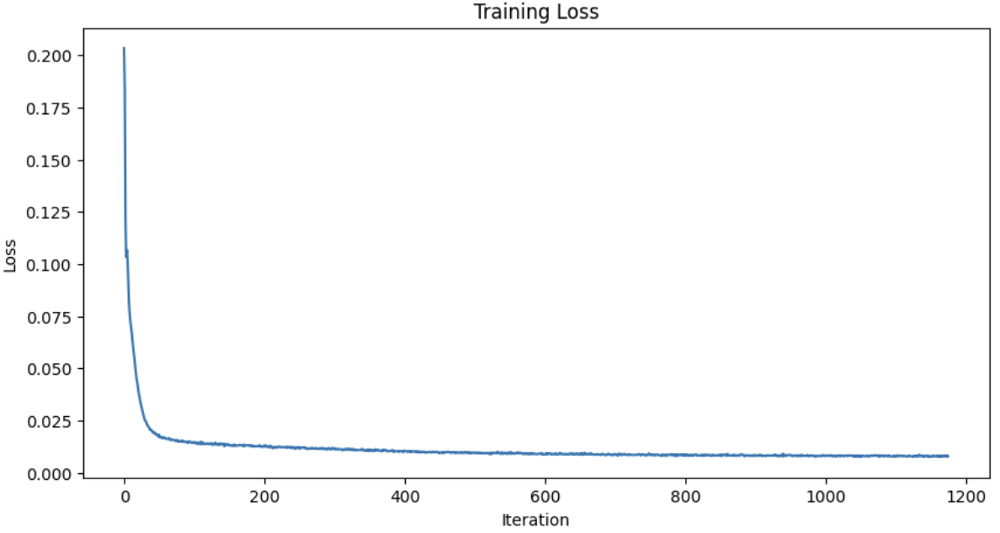
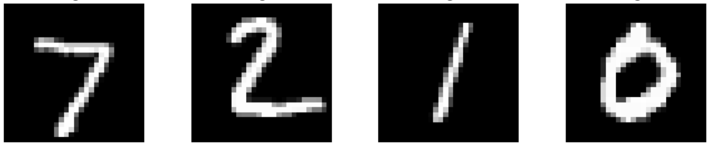
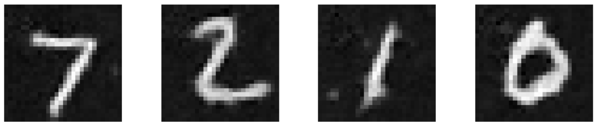
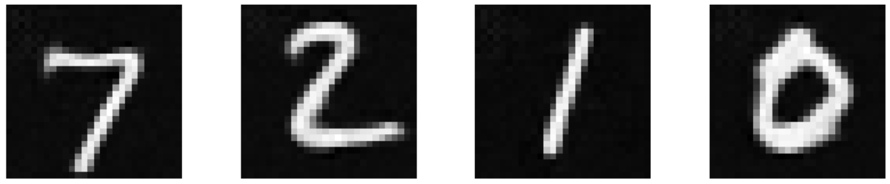
To test the robustness of the trained denoiser, I tested its performance on different sigma values that it wasn't trained on.
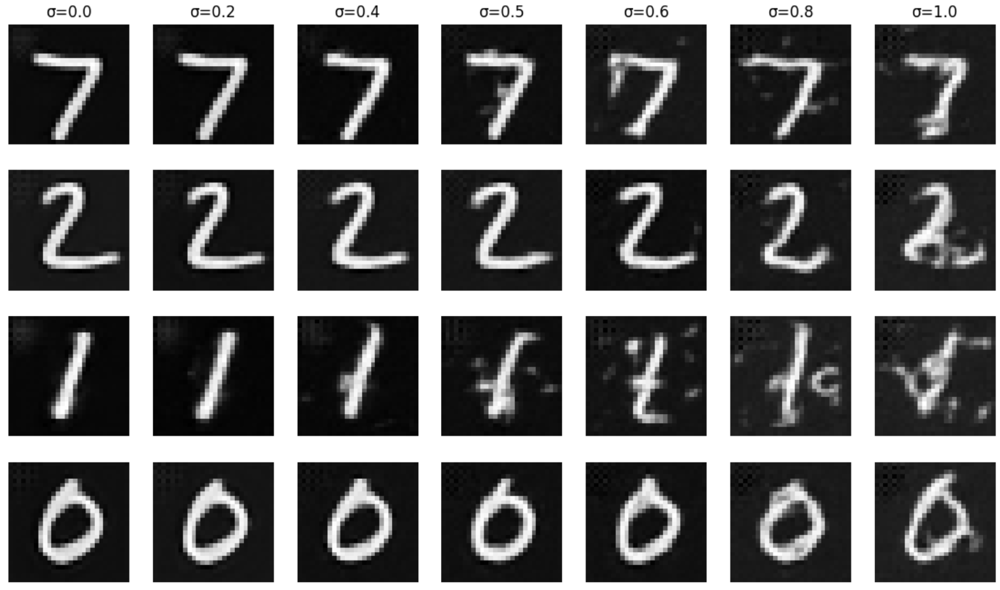
In this part, I experimented the idea of training the model to denoise pure, random Gaussian noise. During training, I noticed that the generated outputs exhibit noticeable common patterns across samples. Rather than producing sharp, diverse images, the outputs tend to look blurry and converge toward similar average-looking structures. Fine details are largely absent, and the images often resemble a “prototype” of the training data rather than a specific instance. This behavior can be explained by the use of an MSE loss during training. Under an MSE objective, the optimal prediction is the point that minimizes the expected squared distance to all possible target images. This point corresponds to the mean (or centroid) of the training distribution in pixel space. In the context of denoising pure noise, where there is no informative signal to condition on, the model has no choice but to fall back to this average solution. Thus, the denoised output represents an estimate of the average training image rather than a realistic sample from the data distribution. The model is effectively predicting the centroid of the training images, which minimizes MSE but does not capture multimodal or high-frequency structure in the data.
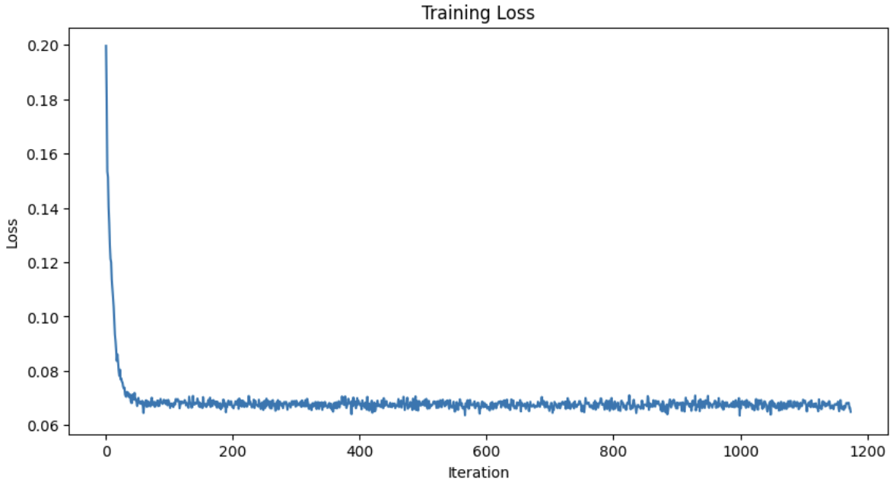
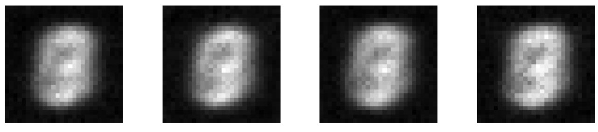
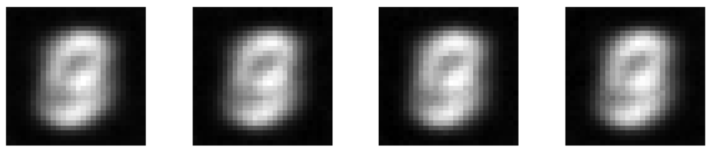
In this part, I use FCBlocks to inject the conditioning signal into the UNet.
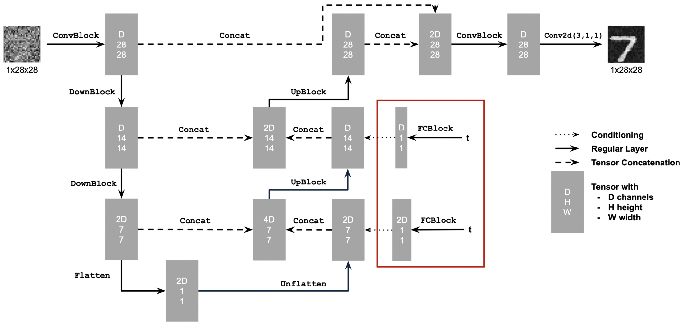
I trained the time-conditioned UNet by selecting a random image x1 from the training set and a random timestep t, adding noise to x1 to get xt, and training the denoiser to predict the flow at xt. I repeat this for different images and different timesteps until the model converges.
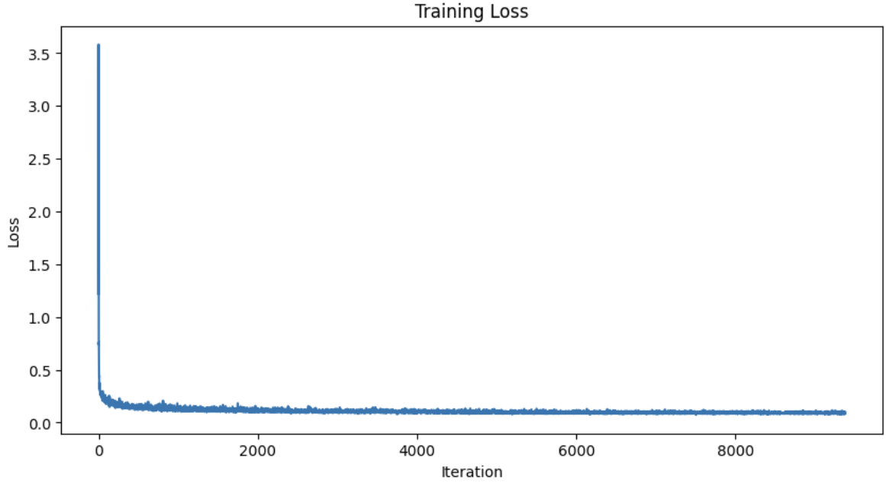
After training, I implemented the DDPM sampling algorithm to generate new digits from random noise. Starting from pure Gaussian noise, I iteratively denoise using the trained UNet, following the reverse diffusion process. At each timestep, I predict the noise, compute the denoised image, and add a small amount of random noise (except at the final step) to enable stochastic sampling.
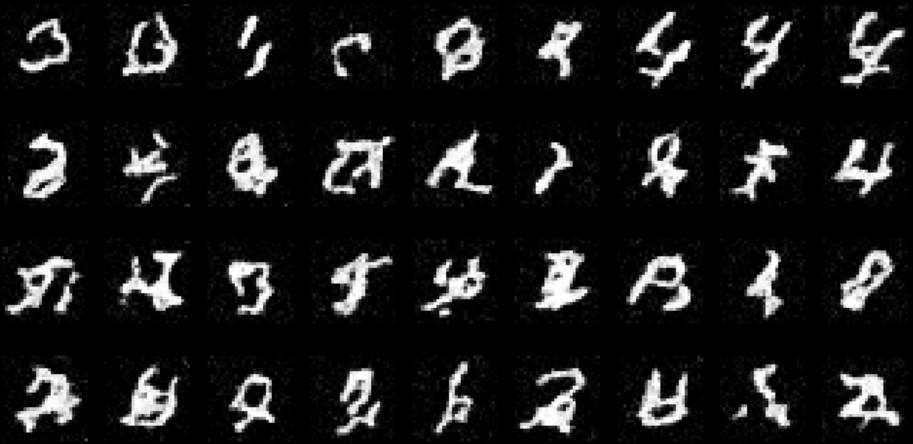
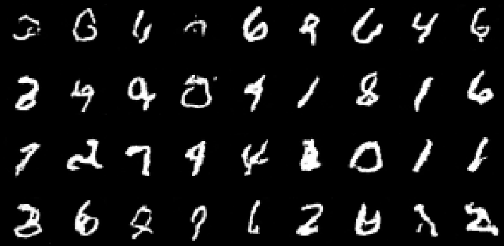
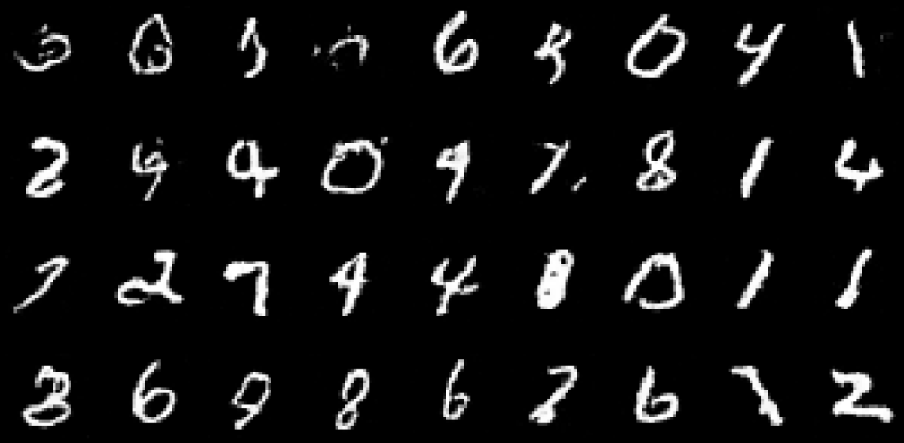
To enable controlled generation of specific digits (0-9), I added class conditioning to the UNet. I represent each class as a learnable embedding vector, which is processed and combined with the time value before injection into the UNet. During training, I randomly drop the class condition 10% of the time. This enables classifier-free guidance at sampling time.
I implemented classifier-free guidance (CFG) to improve sample quality and adherence to the class condition. At each sampling step, I predict noise both conditionally and unconditionally. The final noise prediction is computed as: noise = unconditional_noise + gamma * (conditional_noise - unconditional_noise), where gamma is the guidance scale.
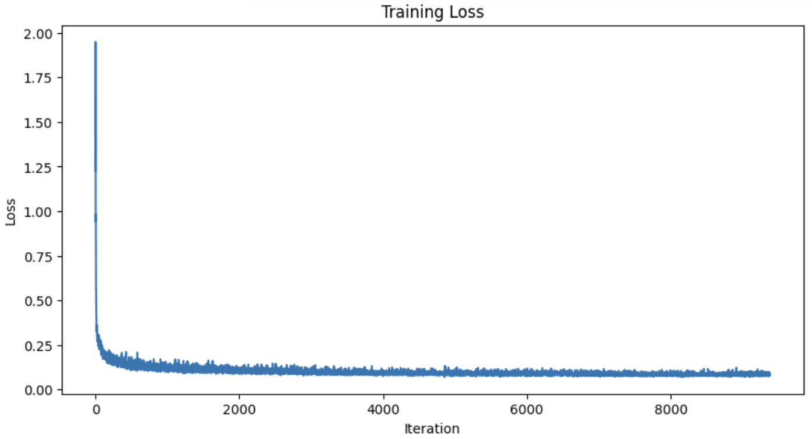
I sampled with class-conditioning using classifier-free guidance with gamma = 5.0. To try to maintain the same performance after removing the exponential learning rate scheduler, I lowered the learning rate from 1e-2 to 1e-3, allowing the model to learn more steadily over time. Below are the sampling results after 1, 5, and 10 epochs of training with and without the learning rate scheduler.
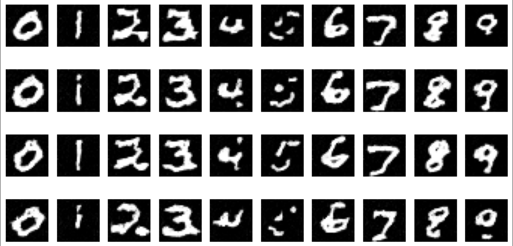
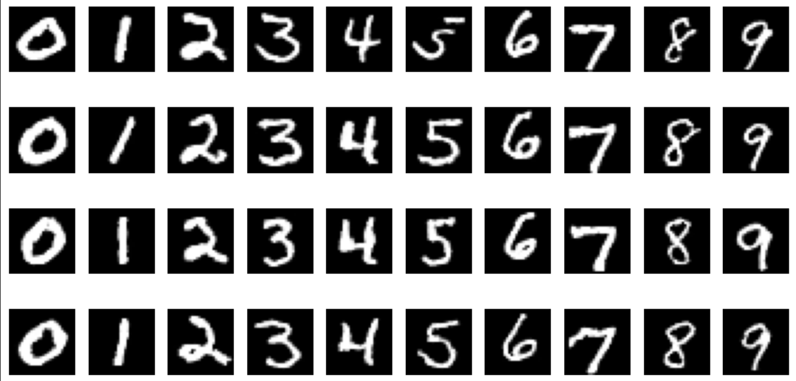
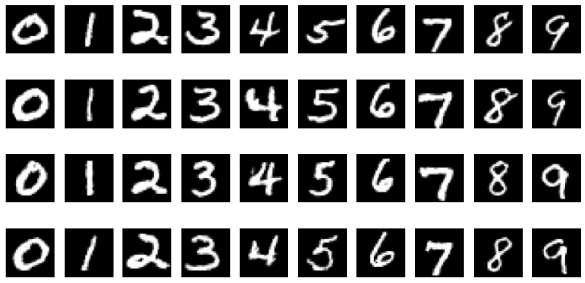
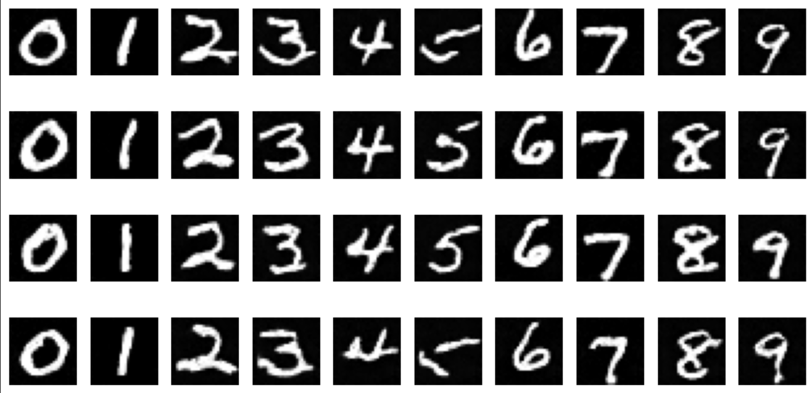
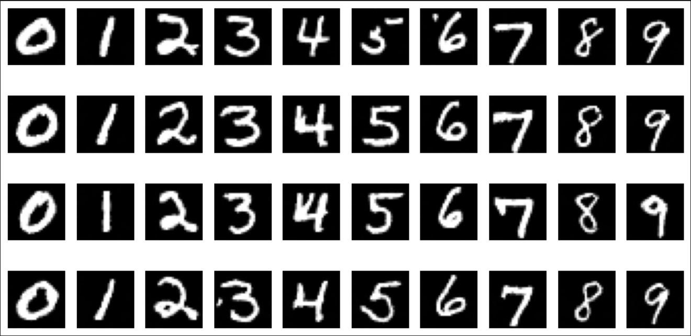
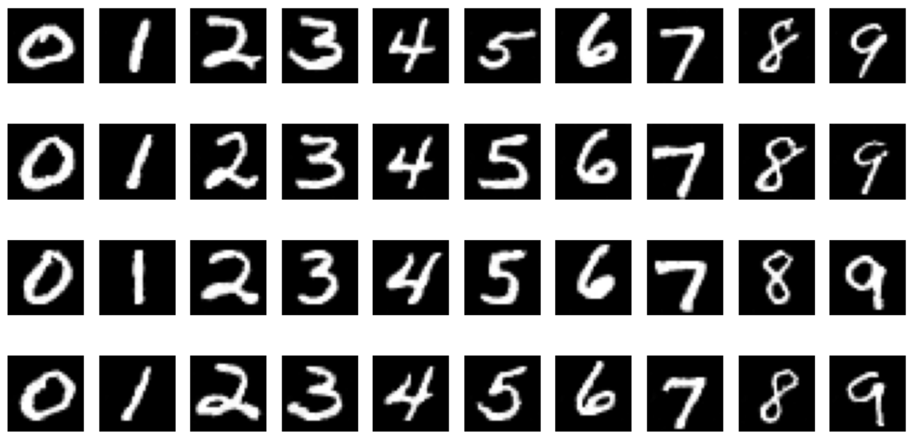
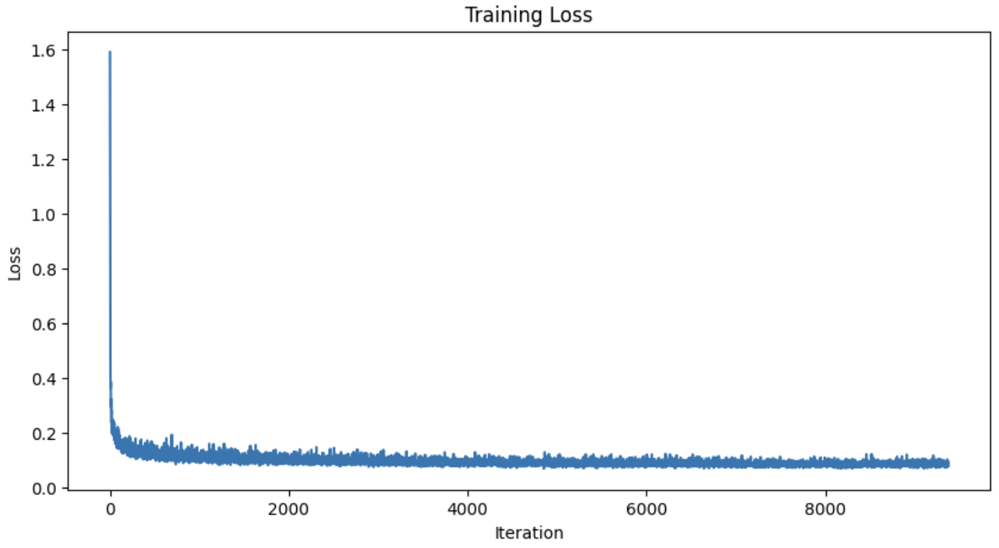